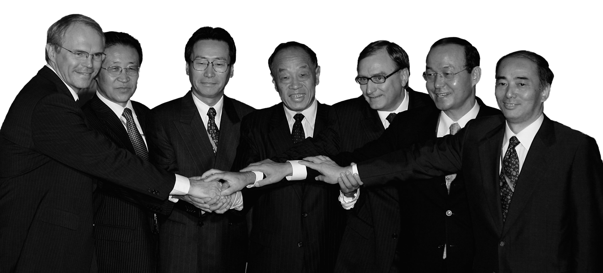

A Visual History of US-North Korea relations
- There appears to be an inverse correlation between U.S.-DPRK diplomacy and the frequency of North Korean provocations in this 25-year period.
- The absence of missile tests or other kinetic provocations does not necessarily suggest a halt in North Korean weapons development or reduction of the threat. But, diplomacy does seem to have some restraining effect on the number of provocations carried out
- The ratio of provocations to negotiations is lowest under North Korean leader Kim Il-sung from 1990 to 1994. The ratio of provocations to negotiations is highest under North Korean leader Kim Jong-un from 2012 to the present (see chart).
- Whether the U.S. president is a Democrat or Republican, party control of the White House appears to have no effect on the pace of North Korean provocations.
- Negotiations under Kim Jong-un hit historic lows in comparison to his predecessors, even when accounting for tenure in office.
Numerous studies have assessed various diplomatic efforts, including the 1994 Geneva Agreed Framework and the Six Party Talks, to explain the international community's failure to stop the DPRK's nuclear program and the complexities of negotiating with North Korea. However, there are few open source studies that have explored the entire record of nuclear diplomacy between North Korea and the United States and have tested the relationship between negotiations and other material variables to explain historical outcomes.
About the Interactive
CSIS Beyond Parallel has compiled a record of all the bilateral and multilateral negotiations between the U.S. and North Korea from 1990 to 2017. The pattern of negotiations is shown in the chart to the left. The calendar interactive displays Provacations by North Korea and Negotations between the United States and North Korea. Each month in an year has two squares, one for negotiations and one for provocations.
Negotiations between North Korea and the United States are shown as squares in shades of blue. A darker shade of blue represents more Negotiations
Provocations by North Korea are shown as squares in shades of red. A darker shade of red represents more Provocations.
Key events in the relationship between the United States and North Korea are marked with a dashed circle. You will find annotations for these events further along in the interactive as you scroll.
First North Korean Nuclear Crisis & 1994 Geneva Agreed Framework
 Kim Il-Sung
Kim Il-Sung

There were 7 negotiation events that occurred in this period. Prior to 1990s, the U.S. had little to no diplomatic contacts with North Korea. The George H.W. Bush administration’s “limited engagement” policies were directed at obtaining Pyongyang’s compliance with a IAEA nuclear safeguards agreement to allow for inspections of their nuclear facility and plutonium reprocessing plant.
North Korea carried out 7 different provocations during this period. A couple of short-range SCUD missiles and medium-range Nodong missiles were tested. North Korean soldiers and spies were also found to have infiltrated South Korea at least once. There appeared to be little to no relationship between the events even though the ratio of negotiations to provocations was 1:1.
 Bill Clinton
Bill Clinton
There were 19 negotiation events that took place between the U.S. and North Korea during this period. The negotiations centered around international inspections of North Korea’s nuclear facilities, nuclear waste sites, and its announced withdrawal from the Nuclear Nonproliferation Treaty (NPT) in early 1993.
Negotiations broke down in May 1994 over North Korea’s defueling of the nuclear reactor at Yongbyon and the removal of the spent nuclear fuel rods for the purpose of separating out weapons-grade plutonium.
After a visit to North Korea by former president Jimmy Carter in June 1994, however, the U.S. and North Korea returned to dialogue. All six negotiations that took place in the summer and fall of 1994 were focused on achieving the October 1994 Agreed Framework.
In the process, North Korea agreed to freeze and eventually dismantle its nuclear reactors and allow IAEA inspectors to monitor the implementation process. In exchange, the U.S. agreed to provide two light-water reactor power plants, energy assistance, and security assurances while working towards normalization of bilateral relations.
There were a total of 3 provocations during this period. North Korea tested several short-to-medium range missiles in late May of 1993 and late May of 1994 while tensions were running high over the nuclear program. In this short period of time the ratio of provocations to negotiations was comparatively low (see chart below). This period concluded with Kim Il-sung’s death in July 1994.
 Kim Jong-Il
Kim Jong-Il
The U.S. and North Korea engaged in 109 negotiation events during this time which largely revolved around implementation and enforcement of the provisions of the 1994 Agreed Framework.
The Korean Peninsula Energy Development Organization (KEDO) was formed to implement the provision of light water reactors under the agreement. There were also attempts to hold Three-Party Talks (US-DPRK-ROK) and Four-Party Talks (US-DPRK-ROK-CHN) in the period between 1997 and 1999. Bilateral U.S. and North Korean missile talks also took place from 1996 to 2000.
This period of engagement was punctuated by 24 North Korean provocation events. The provocations included North Korean ground troop infiltrations into South Korea in 1996, the launch of a long-range Taepo-dong missile in August 1998, and the shooting down of a U.S helicopter in December 1994. In comparison to other periods in this 25-year history, the number of negotiations outweighed the number of provocations.
This period concluded with the end of the Clinton administration in January 2001, when suspicions mounted about North Korea’s clandestine pursuit of an enriched uranium nuclear weapons program.
Representatives for the Six Party Talks meet in Beijing for negotiations on July 26, 2005
 George W Bush
George W Bush
This period had the third lowest ratio of provocations to negotiations. There were a total of 64 bilateral and multilateral negotiations that took place. The majority of these were conducted as a part of the Six Party Talks process involving the U.S., Japan, China, Russia, and the two Koreas. The talks started in August 2003.
The nature of these negotiations were initially over revelations of a North Korean clandestine enriched uranium (HEU) program in October 2002, which brought a new sense of urgency to the issue and brought an end to KEDO and the Agreed Framework.
However from August 2003, the negotiations largely focused on Six Party talks diplomacy aimed at achieving a denuclearization agreement, embodied in the September 2005 Six Party Joint Statement. In this agreement, North Korea agreed to abandon development of all its nuclear weapons programs and abide by a verification process that would confirm compliance.
There was a nine-month hiatus in negotiations between January 2006 and October 2006 during which North Korea conducted several provocations (see below), but negotiations resumed from December 2006. This led to an agreement in February 2007 on implementation of the 2005 Joint Statement. Negotiations related to compliance with the Six Party agreements continued through December 2008. The number of negotiation events decreased in comparison to the previous period.
There were a total of 27 North Korean provocations during this 8-year period. The data shows a slight increase from the past. There were also a growing number of missile launches. Between the collapse of the Agreed Framework and the start of the Six Party Talks in early 2003, there was a slight uptick in conventional and missile provocations.
As negotiations restarted in 2004 and 2005, the provocation numbers started to recede suggesting that talks may have restrained North Korea in part from carrying out further provocations. During the period of non-dialogue that spanned nine months in 2006, North Korea carried out a series of provocations including ballistic missile tests in July 2006 and a nuclear test in October 2006.
The Six Party Talks eventually collapsed in December 2008 over disagreements surrounding the process of verification. CSIS Beyond Parallel data subsequently shows an increase in missile testing including a second test of the Taepodong-2 (Unha-3) after the talks collapse.
An incidental finding of this period, when compared with the previous one, is that Pyongyang does not seem to discriminate in terms of which party holds power in the U.S. White House. They carry out provocations in both Democratic and Republican administrations.
Strategic Patience and Leap Day Deal
 Barack Obama
Barack Obama
The number of negotiations dropped significantly during this time period. There were only 3 official bilateral U.S.-North Korean negotiations. The dataset is only inclusive of official meetings in public domain. This does not include 1.5/2.0 track dialogues between private citizens and North Korean officials or private visits to Pyongyang. The data shows not only a noticeable absence of negotiations but also a corresponding increase in North Korean provocations particularly of ballistic missile launches over a shorter period of time.
North Korea carried out 17 provocations in this nearly three-year period. The majority these were missile launches and a nuclear test in 2009. The year 2010 also witnessed deadly military exchanges in the West Sea around the Northern Limit Line (NLL). North Korea’s sinking of the Cheonan, a South Korean naval vessel, and the shelling of Yeonpyeong Island caused significant damage. For more on North Korean missiles and other provocations see here.
This is a placeholder caption
Again this shows that North Korea does not appear to discriminate between Democratic and Republican U.S. presidents in carrying out provocations. Indeed, the regime seems more responsive to the frequency of negotiations as a variable than in the party in power in Washington. This period ends in December 2011 with the death of Kim Jong-il and the ascension of Kim Jong-un to power.
Kim Jong-Un comes to power
 Kim Jong-Un
Kim Jong-Un
This period has the highest ratio of provocations to negotiations. The 2 official negotiations that occurred during this period were associated with the “Leap Day Agreement”, an attempt to get North Korea to freeze its nuclear weapons program in exchange for U.S. food aid.
The deal fell apart when North Korea launched a Taepo-dong 2 (Unha-3) rocket in April 2012. The U.S. enunciated a policy of “strategic patience” vowing not to return to negotiations until North Korea demonstrated that it would commit to denuclearization. The U.S. and North Korea did not conduct any formal negotiations in the public domain between March 2012 and January 2017. Secret meetings and other 1.5/2.0 track dialogues were not included in this dataset.
An incidental finding is the drop-off in the number of formal negotiations under Kim Jong-un relative to his predecessors, even accounting for tenure in office. From 1990 to the present, significantly more negotiations happened under Kim Il-sung (26) and Kim Jong-il (175) than Kim Jong-un (2).
The data in this period shows a significant increase in the number and intensity of North Korean provocations. On 78 different occasions between February 2012 and August 2017, North Korea carried out over 80 missile tests and three nuclear tests. The nuclear tests occurred in February 2013, January 2016 and September 2016. During this period, North Korea moved from testing operational Nodong and Scud missiles to new developmental models such as the Musudan and the KN-11, a submarine launched ballistic missile.
Maximum Pressure and Engagement
 Donald Trump
Donald Trump
There have been no official government nuclear negotiations between the Kim Jong-un regime and the Trump administration. There were secret meetings between State Department officials and North Koreans that took place in Oslo, New York, and Pyongyang from May to June 2017 to facilitate the release of a detained American student. However, secret meetings and other 1.5/2.0 track dialogues were not included in this dataset.
North Korea has conducted at least 23 missile tests on 15 different occasions between February and August 2017. This includes two successful tests of an intercontinental ballistic missile in July.At the current pace, North Korea may do well over 100 missile tests during the four-year term of the U.S. president, which would represent a historic high.
Conclusion
North Korea seems more determined than ever to be recognized as a nuclear-weapons state. The data collected and analyzed by Beyond Parallel shows that there is a clear difference between approaches to diplomacy under Kim Il-sung, Kim Jong-il, and Kim Jong-un. The record shows that Kim's father and grandfather were much more likely to take on the risks of diplomacy at perceived opportune times. Despite the attempts at “shuttle diplomacy” and unofficial two-track dialogue with former government officials over the last year, it is not clear that Kim Jong-un wants to return to the negotiating table anytime soon.
Experts who believe that engagement is the only way to change North Korean behavior will argue that this data demonstrates that we should pursue further negotiations to freeze or cap North Korea's nuclear program. Analysts who believe that North Korea will never change until there is a transformation in the fundamental nature of the regime will argue that more futile negotiations will not help us achieve the goal of denuclearizing the Korean Peninsula, especially with a leader who seems to shun diplomacy. What is clear is that the picture is still very grey and that we should pursue opportunities to resolve the North Korean problem in whatever form they come.